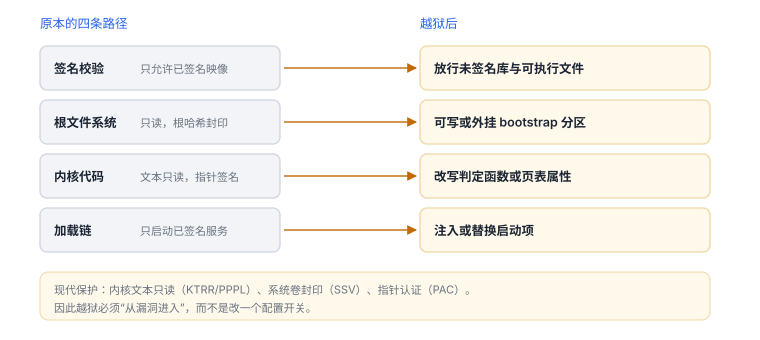
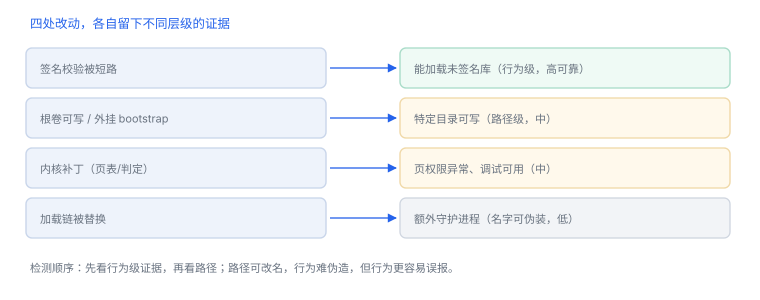

越狱到底改了什么
越狱改的是四条校验路径，不是“打开一个开关”
越狱在机制上只有一句话：让设备接受未由 Apple 签名的代码，并让这段代码在内核与用户态都能落地。理解了它改哪几处、留下什么证据、为什么现代设备越来越难，也就理解了 iOS 信任模型的边界。
场景 你拿到一台改过的设备，桌面上多了个从没见过的图标。真正被动的不是这个图标，而是四条校验路径里的某一环——找到是哪一环，后面所有现象才有解释。
1. 三种形态：重启后还在不在
| 形态 | 重启后 | 补丁位置 | 日常可用性 |
|---|---|---|---|
| 不完美（tethered） | 失效，需重新接电脑引导 | 引导期内存补丁，不落盘 | 低，几乎不能日常使用 |
| 半完美（semi-tethered） | 失效，需重新触发 | 引导期 + 用户态触发 | 中，每次重启要重来 |
| 半不完美（semi-untethered） | 系统可正常开机，环境需重新启用 | 持久化到用户态与文件系统 | 高，最常见形态 |
三种形态的差别不在“解锁程度”，而在补丁落在内存还是落盘。落盘的方案要考虑持久化位置与重启后的加载顺序；只在内存的方案则每次开机都要重放一遍。
2. 被改动的四条路径
| 路径 | 原本行为 | 越狱后 | 改动粒度 |
|---|---|---|---|
| 代码签名校验 | 只允许 Apple 或已授权证书签名的映像 | 放行未签名/自签名库与可执行文件 | 一处判定（几个字节） |
| 根文件系统 | 只读，系统卷带根哈希封印 | 挂载可写，或把 bootstrap 放到可写分区 | 一个挂载标志 |
| 内核代码与页表 | 内核文本只读、指针带签名 | 改写判定函数或页表属性 | 1–2 个函数或页表项 |
| 进程加载链 | launchd 只启动已签名服务 | 注入或替换启动项，加载第三方守护进程 | 一个作业描述文件 |

3. 数据细节：改动到底有多大
“改内核”听起来工程浩大，实际改动的字节数很小，难的是“改进去”这一步：
| 对象 | 量级 | 说明 |
|---|---|---|
| 一条判定分支 | 4–8 字节 | 把条件跳转改成无条件跳转，或把返回寄存器写 1 |
| 一个页表项 | 8 字节 | 改权限位即可让只读页可写 |
| 一次写入影响的页 | 16 KB | iOS arm64 页大小，写一次就产生一个私有脏页 |
| 签名校验点 | 3 处 | 安装、加载、运行三个阶段，改一处不够 |
| bootstrap 目录 | 数百 MB 量级 | 包含包管理器与常用命令行工具 |
这解释了两个现象：越狱工具的体积可以很小，但准备工作很长；以及“越狱后系统变慢”往往不是补丁本身，而是持久化目录与新增加载项带来的开销。
4. 原理推演：为什么现代设备必须“从漏洞进入”
如果把启动链看成一组串联的判定，越狱只需要让其中一环返回“通过”。现代设备把这条路堵了三层：
- 改写不了：内核文本在硬件层被锁为只读（KTRR/PPPL），改代码前要先改页表，而页表本身受保护。
- 改不了数据：系统卷有根哈希封印（SSV），改文件会导致启动校验失败。
- 伪造不了跳转：指针带签名（PAC），凭空构造的跳转目标会触发异常。
三层叠加后，正常路径只剩一条：先用漏洞取得“能改”的能力，再在窗口内完成改动。这也是为什么越狱与系统版本强绑定——补丁点随版本变化，而漏洞会被逐个修掉。
5. 一次真实排查记录：重启后环境消失
- 现象：设备重启后，应用里的检测不再报警，工具也无法加载。
- 先分类：不是应用问题，也不是检测失效——更可能是“越狱环境没起来”。
- 查证据：确认属于哪种形态；半不完美方案重启后不会自动恢复，需要重新触发。
- 验证假设：重新触发后若一切恢复，则结论成立；若仍失败，才去看系统版本是否已超出工具支持范围。
- 结论与限制：记录为“形态为半不完美，重启需手动启用”，并注明该结论只对当前工具与系统版本成立。
6. 工程权衡：检测放在哪一层
| 层次 | 能发现 | 成本与风险 |
|---|---|---|
| 用户态自检 | 镜像、端口、行为异常 | 可被绕过；误报直接影响用户 |
| 内核/系统服务 | 更底层的篡改 | 应用无法部署，只有平台方可用 |
| 服务端风控 | 跨设备、跨时间的异常模式 | 需要数据积累，响应有延迟 |
应用能做的只有第一层，因此正确姿势是“自检产出信号，服务端做判定”，而不是在客户端直接拒绝服务。
7. 可观测证据：哪些能伪造，哪些难
| 证据 | 获取方式 | 可靠性 |
|---|---|---|
fork() 是否可用 | 调用后检查返回值 | 高（行为级） |
| 能否加载未签名库 | 尝试 dlopen 自建库 | 高 |
| bootstrap 目录是否存在 | 路径探测 | 中（路径可改） |
| 包管理器类应用 | URL scheme 或应用列表 | 低（可隐藏） |
| 额外 launchd 作业 | 进程/服务列表 | 中（名字可伪装） |

行为级检测骨架（仅用于评估自有防护）
#include <unistd.h>
bool sandboxAllowsFork(void) {
pid_t pid = fork();
if (pid == 0) { _exit(0); }
return pid >= 0; // 沙盒正常时通常返回 -1
}行为级证据也会误报
能 fork、能加载未签名库说明环境被放宽，但企业设备与测试机可能同样如此；这类信号适合加权，不适合单独定罪。
能 fork、能加载未签名库说明环境被放宽，但企业设备与测试机可能同样如此；这类信号适合加权，不适合单独定罪。
8. 自测
- 为什么“改内核”的字节数很小，却仍然很难？
- 半不完美方案重启后为什么需要重新触发？
- 三层保护中，哪一层让“伪造跳转”失效？
- 为什么客户端自检不能直接作为拒绝服务的依据？